LinuxWorld San Francisco 2004 ran during the first week of August. We were proud to make a strong showing thanks Chris DiBona and VA Japan for hooking us up with a booth in .Org Pavilion.
This was an interesting event for us because it was the first time any of us had gotten together as a group. Several developers shelled out some cash and really rearranged scheduals to be here for at least part of the event and it was well worth it. In attendance was Raster, RbdPngn, Xcomp, KainX, Evolution, Euclid, Horms, Xenith, Vac, benr, tamr and novar.
Here are a couple of the pictures from the event:
| 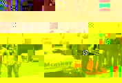 | Group picture. Left to right: Taru (VA Japan), Xcomp, benr, Raster, Vac, Horms, KainX, and RbdPngn. Taken by Xenith. |
| 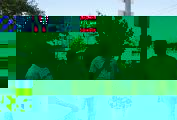 | Dev talk takes to the streets. Taken by Raster. |
| 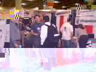 | Raster talking with someone from Helix (Real Networks). RbdPngn and benr doing a demo for a passing developer in back. Taken by Evolution. |
| 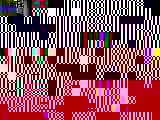 | Developers at the pub. Raster is looking at the camera, to his left is Vac, Horms, KainX and Xenith. On his right is Xcomp, benr, RbdPngn, Taru (VA Japan) and Euclid. Taken by Evolution. |
| 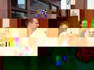 | Euclid, KainX (looking somehow important) and Raster in front of the pub. Taken by Evolution. |
| 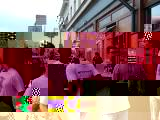 | Xcomp (looking serious), RbdPngn (looking interested) and benr (in mid blink) in front of the pub. Taken by Evolution. |
| 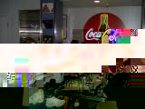 | Dinner after the first night of the show (and the pub) joined by several ex-VA'ers including Larry Augustin (VA Linux Chairman) in the blue shirt. Taken by Evolution. |
| 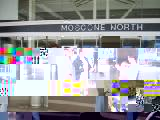 | Xenith, Raster, novar and tamr in front of Moscone the Sunday before the show doing setup and planning. Taken by benr. |
| 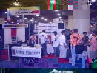 | A very slow afternoon. Taken by benr. |
| 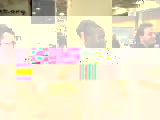 | Left to Right, RbdPngn, Xcomp, (Xenith behind him), and Raster. Taken by benr. |
| 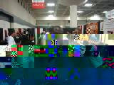 | Xcomp looking kool. Taken by benr. |
| 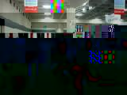 | Raster talking with our new good friend Hideya Kawahara of Project Looking Glass fame. He's a really kool guy. Taken by benr. |
| 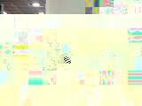 | Euclid on left, Evolution on the right. Taken by benr. |
| 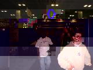 | RbdPngn, followed by Xcomp, Vac, and Horms on the well earned trip to the pub. Taken by benr. |
| 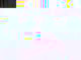 | Benr with E's smallest and newest support team member, Novar. Taken by tamr. |
| 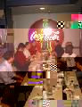 | Dinner at the diner. Taken by tamr. |
 |
Larry and the VA crew at The Thristy Bear, for some after dinner ales. Taken by benr. |
| 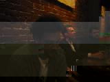 | Xenith looking sober at the Thristy Bear. Taken by benr. |
| 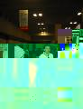 | The Two Kings of X! Raster talks with the man himself, KeithP. (Naturally their friends). Taken by benr. |
| 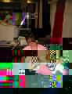 | Tamr with Novar at the booth. Taken by benr. |
| 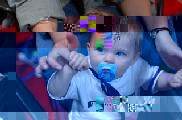 | Nova sports her E Coder Support Team shirt. Taken by benr. |
| 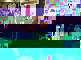 | Frantic Tuesday Morning Setup. Taken by Xenith. |
| 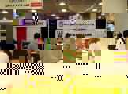 | The booth in action. Taken by Xenith. |
| 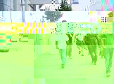 | The gang! Taken by Xenith. |
| 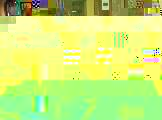 | Another pub shot. Taken by Xenith. |
| 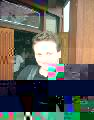 | Raster, International Devloper of Somethingorother. Taken by Xenith. |
| 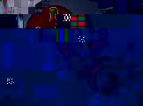 | A better picture of dinner. Taken by Xenith. |
| 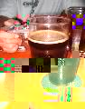 | It's all about the ale. Taken by Xenith. |
| 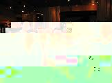 | Group picture at the end of day one. Taken by Larry, no less. |
 |
RbdPngn doing demos. Taken by Xenith. |
{kind=link}
{kind=link}
{kind=link}
{kind=link}
{kind=link}
{kind=link}
{kind=link}
{kind=link}
{kind=link}
{kind=link}
{kind=link}
{kind=link}
{kind=link}
{kind=link}
{kind=link}
{kind=link}
{kind=link}
{kind=link}
{kind=link}
{kind=link}
{kind=link}
{kind=link}
{kind=link}
{kind=link}
{kind=link}
{kind=link}
{kind=link}
{kind=link}
These thumbnails were created in 1.499 seconds using Epeg! View the code I used to create these thumbs: thumb_it.c!